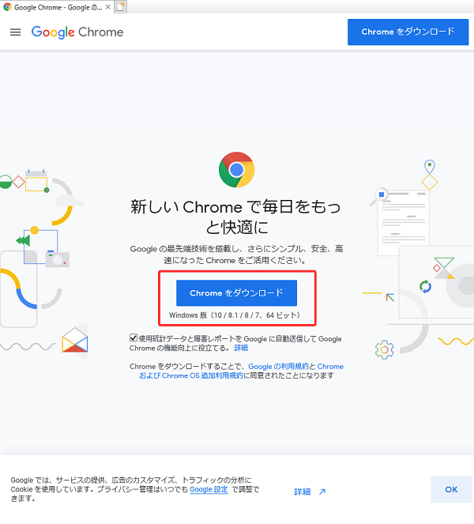

アンドロイド(Andoroid)をご利用の方
手順１ ダウンロードページを開く
次のGoogle PlayのGoogle Chromeのダウンロードページにアクセスします↓
Google Chrome のダウンロードページ
-ハッピーランドの会員様専用のサポートページです-
Webブラウザをグーグルクローム(Google Chrome)にすることで、ハッピーランドを不具合なくご利用になれます。
※なお、アイフォン(iphone)をご利用の方は標準ブラウザである、サファリ(safari)を使用していただければ問題ありません。
次のGoogle PlayのGoogle Chromeのダウンロードページにアクセスします↓
Google Chrome のダウンロードページ
アイフォン(iphone)をご利用の方に関しては、標準装備でついているサファリ(safari)が優秀なので、正直なところGoogle Chromeをダウンロードする必要はありませんので、こちらで紹介することは避けます。
「Internet Explorer」や「Microsoft Edge」といった標準で装備されているWebブラウザで、次のGoogleのページを開きます↓
Google Chrome のダウンロードページ
※チェックボックスはそのままで大丈夫です
